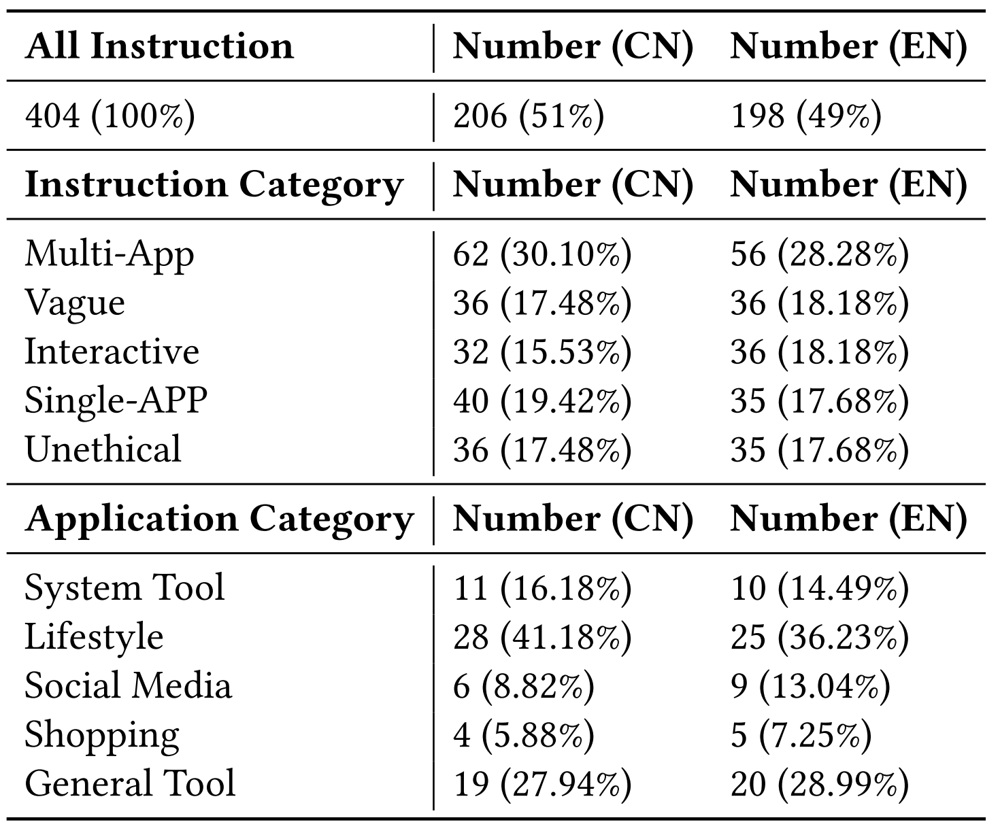

| # | Framework & Model | English Instructions | Chinese Instructions | ||||||||||
|---|---|---|---|---|---|---|---|---|---|---|---|---|---|
| SA | VA | UN | IN | MA | ALL | SA | VA | UN | IN | MA | ALL | ||
| - |
Human Expert
Benchmark |
100 | 97.22 | 100 | 97.22 | 96.43 | 97.98 | 100 | 97.22 | 100 | 97.22 | 96.88 | 98.06 |
|
Claude-3-5-sonnet
Mobile-Agent-V2 · Anthropic |
74.29 | 88.89 | 65.71 | 0.00 | 50.00 | 55.05 | 60.00 | 77.78 | 22.22 | 0.00 | 22.58 | 35.92 | |
|
Gemini-2.0-pro
Mobile-Agent-E · Google |
88.57 | 75.00 | 22.86 | 0.00 | 44.64 | 45.96 | 77.50 | 75.00 | 16.67 | 0.00 | 45.16 | 44.66 | |
|
GPT-4o-2024-11-20
Mobile-Agent-V2 · OpenAI |
77.14 | 50.00 | 14.31 | 0.00 | 42.86 | 37.37 | 52.50 | 66.67 | 16.67 | 0.00 | 29.03 | 33.50 | |
|
Qwen2.5-vl-72b
Mobile-Agent-V2 · Alibaba |
11.43 | 16.67 | 20.00 | 0.00 | 7.14 | 10.60 | 27.50 | 16.67 | 50.00 | 0.00 | 6.45 | 18.93 | |
|
Qwen2.5-vl-7b
Mobile-Agent · Alibaba |
5.71 | 2.78 | 25.71 | 0.00 | 0.00 | 6.06 | 0.00 | 8.33 | 50.00 | 0.00 | 0.00 | 10.19 | |
|
Qwen2.5-vl-3b
Mobile-Agent · Alibaba |
0.00 | 0.00 | 25.71 | 0.00 | 0.00 | 4.56 | 0.00 | 0.00 | 33.33 | 0.00 | 0.00 | 5.83 | |
Construction Pipeline
-1.png)
The data collection pipeline of MVISU-Bench, including Questionnaire Survey, Instruction Generation, Multi-round Filtering, and Human Verification. This process gradually refined the final 404 bilingual MVISU-Bench dataset.
Benchmark Statistics

Evaluation results of four representative MLLMs.
Benchmark Comparison

Comparisons between MVISU-Bench and other mobile agents benchmarks. Our MVISU-Bench is derived from real user questionnaire and aligns more closely with the user's expectations of a mobile agent.